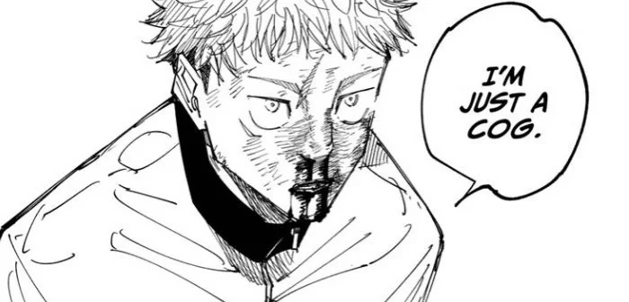

dear terimakaashi,
haii oli :) aku harap kamu dalam keadaan yang baik dan sehat yaa, aku juga harap kamu dalam perasaan tenang dan juga bahagia di hari lebaran ini yang istimewa ini 🙆🏻♂️ aku izin mau ceritaaa 😬
ini agak aneh sih, tapi sejujurnya aku agak merasa sedih karena bulan ramadhan udah lewat dan juga hari ini udah lebaran, kemarin malem aku agak sedikit berkaca-kaca pas lagi berusaha tidur, karena aku merasa "yah udah lewat lagi ya ramadhan" 🥲
aku mulai dari tahun 2024 itu, kayaknya, berpikiran bahwa bulan ramadhan itu "easy mode" nya dalam kehidupan ini, gak tau kalau orang lain gimana mikirnya, tapi buat aku sendiri, menjalani kehidupan di bulan ramadhan itu way way way wayyyyyy much easier daripada di bulan-bulan lainnya 😂
aku selalu meraasa di bulan ramadhan itu adalah 'prime' nya aku wkkwkwkw, aku bisa bangun tidur lebih awal, bisa sholat tahajud, bisa ngaji lebih banyak, bisa lebih sadar sama diri sendiri, bisa merasa lebih tenang, bisa lebih produktif, bisa lebih sehat, ahhhhh masyaAllah banyak banget yang ingin aku sampein dari perasaan aku tentang bulan ramadhan, tapi intinya aku sayang sekali sama bulan ramadhan ini, ini bulan dimana aku bisa berubah, ini bulan dimana aku selalu punya resolusi, ini bulan dimana aku bisa lebih dekat lagi sama diri sendiri dan juga pastinya sama Allah, at least itu yang aku rasain 🙆🏻♂️😞
aku gak mau bandingin sama orang lain dan aku juga harap cerita ini bukan sebagai perbandingan tapi sebagai bentuk rasa syukur aku sama Allah, dan aku ingin bagikan perasaan ini sama kamu yang baca wkwkwk 😖 sebenernya mungkin nothing much buat orang lain yaa, tapi buat aku, aku sangat bersyukur bisa menjalani bulan ramadhan dengan mindset seperti ini, aku juga belum begitu jago dibidang ini, aku juga hanya melakukan apa yang membuat jiwa aku tenang dalam beragama 😬
tapi ketetapan Allah untuk adanya hari idul fitri itu sebagai hari kemenangan 🤔 jadi aku juga perlu menyikapinya seperti itu, idul fitri adalah hari suci dan hari kemenangan, sama kayak di surah al-ala ayat 14 dan 15 kalau aku cari referensinya barusan, sekarang aku ngerti kenapa surah al-ala ini sering dibaca ketika sholat sunnah 😂
mungkin, maka dari itu, harapan dan doa aku untuk idul fitri ini adalah, untuk aku bisa lebih istiqomah lagi, menjaga rutinitas baik yang sudah aku bangun di bulan ramadhan ini, karena standar aku harus dibandingin sama diri aku sendiri terutama dibulan ramadhan ini 😂 bare minimumnya thisa adalah thisa di bulan ramadhan 😭😖 semoga aku bisa lebih kuat lagi, lebih sabar lagi, dan lebih bersyukur lagi untuk bisa menjalani apa yang Allah udah kasih jalan buat aku, mempertahankan dan mengembangkan terus apa yang aku sudah bangun di bulan ramadhan ini 😖 aamiin ya Allah 🙂↕️
terus aku mau cerita lagi yaaa 😖😬
jadi aku alhamdulillah bisa ngejalanin salah satu misi aku, yaitu sharing session didepan keluarga aku 🙆🏻♂️
jadi tadi sepulang sholat eid, dirumah sambil pada ngumpul, ada yang makan, ada yang rebahan, ada yang main hape, aku ajak semua buat sambil dengerin aku sharing session, aku udah lama banget mikirin ini dan ingin sharingnya itu buat keluarga aku minimal, yaitu aku membagikan ilmu yang aku tau tentang AI dan bagaimana kita menyikapinya di dunia serba digital dan penuh informasi fitnah kayak sekarang 😖
sebenernya idealnya itu aku ingin ada canva slide nya gitu, ada yang bisa dilihat, tapi aku belum beres nyiapinnya, jadi daripada momennya ilang barusan, aku langsung aja yapping depan keluarga 😂
alasan aku untuk share ini buat keluarga itu, pertama ya aku punya kekhawatiran, aku takut kalau keluarga aku belum punya ilmunya dan termakan fitnah buatan AI, terus yang kedua aku itu, aku ingin jadi pemantik, mau itu buat keluarga aku, atau bahkan bagusnya untuk sepupu-sepupuku aku, aku ingin mereka jadi muslim yang kuat, yang mau belajar, dan kritis dalam menyikapi informasi yang beredar di dunia digital serba AI kayak sekarang 🤔
ilmu AI yang aku share itu sebatas dasar tentang apa, kenapa, dan bagaimana saja, aku yakin kamu dan kebanyakan dari kita juga sudah paham, tapi yaitu, aku mau jadi pemantik buat mereka lebih sadar wkwkwkw 😬
ngomongin jadi pemantik ini, aku jadi keinget yuji itadori, "i'm just a cog" ⚙️

perasaan ini persis apa yang aku rasain barusan waktu sharing session wkwkwk, aku cuman punya ilmunya sedikit, dan aku juga cuman punya ilmu pendidikan sedikit, aku cuman jadi pemantik di beban peradaban ini wkwkwk 🤔
semoga ada sharing session lainnya, dan aku juga kalau bisa ingin membuat budaya kayak gini di keluarga yang ingin aku bangun nantinya kalau masih punya umur wkwkw 😖🙆🏻♂️
lastlyyy, ini buat kamu yang bacaaaa, oliiliooo 🐈⬛
untuk aku yang bisa sampai di level ini, aku yakin belum tentu bisa sendiri, aku percaya kalau perannya kamu itu cukup besar, untuk aku bisa ada di pemahaman kayak sekarang, jadi sebenernya jawaban aku soal "kalau gak ketemu kamu, aku bakal gimana?" waktu itu belum begitu lengkap, dan aku rasa bakal terus nambah alasannya, and it is a good thing 🙂↕️ aku sangat bersyukur bisa ketemu oli 🙆🏻♂️ terima kasih karena sudah ada, sudah menemani secara langsung atau gak langsung, aku banyak berdoa tentang kamu wkwkwk, terima kasih lagi untuk banyak 'hadiah-hadiah' yang kamu sudah berikan 🌳
untuk itu, selamat hari raya idul fitri yaaa alila khairunazhifa dan keluarga :) 😖🙂↕️ selain berdoa tentang kamu, aku juga berdoa untuk keluarga kamu 👑 aku berdoa untuk kamu dan keluarga selalu diberikan kesehatan, diberikan ketenangan, dilancarkan segala urusannya, dimudahkan rezekinya, selalu diberikan perlindungan dan dijauhkan dari fitnah dunia 🙆🏻♂️ aku berdoa semoga oli dikabulkan segala cita-cita nya, selalu diberikan yang terbaik oleh Allah, kelapangan dada, ketenangan hati, dan kebahagiaan dunia akhirat 🙂↕️
oli, mohon maaf lahir batin yaa, maaf untuk banyak kesalahan dan kekurangan yang telah aku lakukan, hal-hal yang bikin kamu sakit hati, hal-hal yang bikin kamu overthinking, hal-hal yang membuat kamu gak nyaman, aku minta maaf yaa 🙆🏻♂️ maaf dan juga terima kasih :)
selamat hari raya idul fitri!!! ✨ i wish you all the best!
aku sangat bersyukur bisa menulis ini semua, aku sangat bersyukur bisa ceritain ini sama oli, aku bersyukur bisa kenal oli :)
terima kasih sudah membaca sampai sini!
dari mochamad thiesa nabil